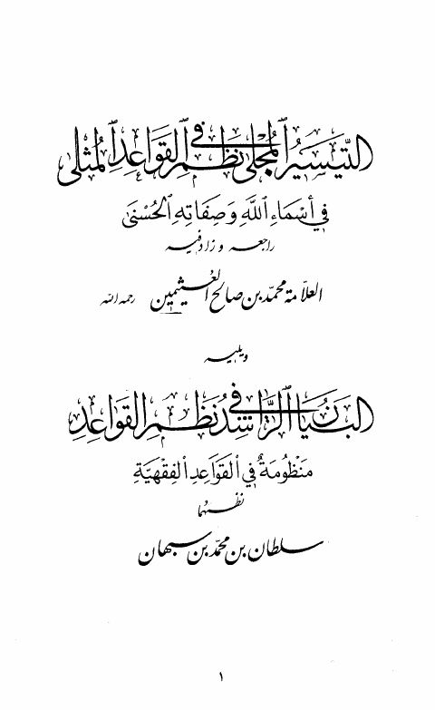

Downloads need an internet connection.
التيسير المجلى في نظم القواعد المثلى ويليه البنيان الراشد في نظم القواعد الفقهية
Authors: محمد بن صالح العثيمين سلطان بن محمد سبهان
**▫️ العنوان: التيسير المجلى في نظم القواعد المثلى ويليه البنيان الراشد في نظم القواعد الفقهية** ▪️ المؤلف: #محمد_بن_صالح_العثيمين • #سلطان_بن_محمد_سبهان ▫️ الطبعة: 1 ▪️ عدد الأجزاء: 1 ▫️ الصفحات: 28 ▪️ نوع الوعاء: #كتاب ▫️ التصنيف الرئيسي: #العقيدة_والمذاهب_والأديان ▪️ التصنيف الفرعي: #التوحيد ۪